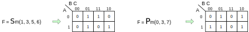

Introduction to K-Maps
Logic Minimization

K-Maps
Truth tables are not very useful for minimizing logic systems, and Boolean algebra has limited utility. Logic graphs offer the easiest and most useful pen-and-paper method of minimizing a logic system. A logic graph and truth table contain identical information, but patterns that indicate redundant inputs can be readily identified in a logic graph. A logic graph is a two (or even three) dimensional construct that contains exactly the same information that a truth table does, but arranged in an array structure so that all logic domains are contiguous, and logic relationships are therefore easy to identify. Information in a truth table can easily be recast into a logic graph. The figure below shows how a three-input truth table is mapped to an 8-cell logic graph; the numbers in the logic graph cells are the numbers in the truth table rows.
A 1-to-1 correspondence exists between the cells in the logic graph and the rows in a truth table, and that the cell numbers have been arranged so that each logic variable domain is represented by a group of four connected cells (the A domain is a row of four cells, and the B and C domains are squares of four cells). This particular arrangement of cells in the logic graph isn’t the only one possible, but it has the useful property of having each domain overlap the others in exactly two cells. As can be seen in the figure, the logic domains are contiguous in the logic graph, but they are not contiguous in the truth table. It is the contiguous logic domains in the logic graphs that make them so useful.
Logic graphs are typically shown with variable names near the graph borders, and 1’s and 0’s near cell rows and columns to indicate the value of the variables for the rows and columns. The logic graph below shows a typical appearance. Note that the variable values on the logic graph edges can be read from left to right to find the truth table row that corresponds to a given cell. For example, the A = 1, B = 0, C= 1 row in the truth table below is shaded, and that row corresponds to the shaded cell in the logic graph.
The information in the output column of the truth table below has been transferred row-for-cell into the cells of the logic graph, and so the truth table and logic graph contain identical information. In the logic graph, 1’s that appear adjacent to one another (either vertically or horizontally) are said to be “logically adjacent”, and these adjacencies represent opportunities to find and eliminate redundant inputs. Logic graphs used in this manner are called Karnaugh Maps (or just K-Maps) after their inventor. Figure 3 below shows a four-input truth table mapped to a 16-cell K-map.
Find Minimum Logic Expressions Using K-maps
The key to using K-maps to find and eliminate redundant inputs from a logic system is to identify “groups” of 1’s for SOP equations or groups of 0’s for POS equations. A valid group must be a “power of 2” size (meaning that only groups of 1, 2, 4, 8, or 16 are allowed), and it must be a square or rectangle, but not a diagonal, dogleg, or other irregular shape. Each ‘1’ in a SOP K-map must participate in at least one group, and each ‘1’ must be in the largest possible group (and likewise for 0’s in POS maps). The requirement that all 1’s (or 0’s) are grouped in the largest possible group may mean that some 1’s (or 0’s) are part of several groups. In practice, loops are drawn on a K-map to encircle the 1’s (or 0’s) in a given group. Once all 1’s (or 0’s) in a map have been grouped in the largest possible loops, the grouping process is complete and a logic equation can be read directly from the K-map. If the procedure is performed correctly, a minimal logic equation is guaranteed.
SOP logic equations are read from a K-map by writing product terms defined by each loop, and then OR’ing the product terms together. Likewise, POS logic equations are read from a K-map by writing sum terms defined by each loop, and then AND’ing all the sum terms together. A loop term is defined by the logic variables on the periphery of the K-map. SOP loop terms use minterm codes (i.e., the ‘0’ domain of a variable results in that variable being complemented in the product term for the loop), and POS loop terms use maxterm codes (i.e., the ‘1’ domain of an input variable results in that variable being complemented in the sum term for the loop). If a loop spans across both the ‘1’ and ‘0’ domain of a given logic variable, then that variable is redundant and it does not appear in the loop term. Restated, a logic variable is included in a loop term only if the loop is contained entirely in the ‘1’ or ‘0’ domain of that variable. The edges of maps are continuous with the opposite edges, so loops can span from one edge to the other without grouping 1’s or 0’s in the middle (the examples below illustrate this process).
K-maps can be used for finding minimal logic expressions for systems of 2, 3, 4, 5, or 6 input variables (beyond 6 variables and the technique becomes unwieldy). For systems of 2, 3, or 4 variables, the technique is straightforward, and it is illustrated in several examples below. In general, the looping process should be started with 1’s (or 0’s) that can only be grouped in one possible loop. As loops are drawn, ensure that all 1’s (or 0’s) are in at least one loop, and that no redundant loops exist (a redundant loop contains 1’s or 0’s that are all already grouped in other loops).
Minterm SOP equations and maxterm POS equations can be readily transferred into K-maps by simply placing 1’s (for SOP equations) and 0’s (POS) in the cells listed in the equation. For SOP equations, any cell not listed as receiving a ‘1’ gets a ‘0’, and vice-versa for POS equations. The figures below illustrate the process. 
Super K-maps
For systems of 5 or 6 variables, two different methods can be used. One method uses 4-variable K-maps nested in 1 or 2 variable “Super K-Maps”, and the other method uses “K-Maps with entered variables”. The super-map technique for finding minimum equations for 5 or 6 variables closely follows the technique used for 2, 3, or 4 variables, but 4-variable maps must be nested into 1 or 2-variable super-maps as shown below in Fig. 6. Logic adjacencies between the sub-maps can be discovered by identifying 1’s (or 0’s) in like-numbered cells in adjacent super-map cells. The patterns in the maps show examples of adjacent cells in the K-maps. SOP equations for the maps are shown. Note that the “super map” variables do not appear in product terms when 1’s are located in like-numbered cells in the sub maps.
Important Ideas
- Logic graphs offer the easiest and most useful pen-and-paper method of minimizing a logic system.
- In the logic graph, 1’s that appear adjacent to one another (either vertically or horizontally) are said to be “logically adjacent”, and these adjacencies represent opportunities to find and eliminate redundant inputs. These are called K-maps.
- K-maps can be used for finding minimal logic expressions for systems of 2, 3, 4, 5, or 6 input variables.
- The looping process should be started with 1’s (or 0’s) that can only be grouped in one possible loop. As loops are drawn, ensure that all 1’s (or 0’s) are in at least one loop, and that no redundant loops exist.
- Minterm SOP equations and maxterm POS equations can be readily transferred into K-maps by simply placing 1’s (for SOP equations) and 0’s (POS) in the cells listed in the equation.